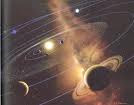

Isn't this graphic of the solar system fascinating? Let's research a few things about space bodies..
1. What planet was named after the mythological god of agriculture?
2. What celestial body is named after the Roman god of the underworld?
3. Who discovered Neptune?
4. What planet is named after the mythological lord of skies and husband of Earth?
5. First recorded in 246BC, what cosmic wonder will next occur in 2061?
6. If you weight 70 pounds on Earth, how much would you weigh on Jupiter?
Enjoy the hunt. Winner will be announced on Monday, and awarded prizes.
--Puffles

-2.jpg)


{kind=link}
47 comments:
Yayz first coment cool on the space stuff! ~nikitathakor39
1.saturn
2.pluto ( or eris )
3.Neptune was predicted by mathmatical calculations and first observed on Sept 23, 1846 by Johann Galle, Urbain Le Verrier and John Couch Adams. On August 25, 1989, the Voyager 2 flew past Neptune.
4.jupiter
5.Halley's comet
6. 185 pounds
chobot name: unizu
Keeewll!!!
-Hawiian
1,suters"ceres"
2,eris
3,Neptune was predicted by mathmatical calculations and first observed on Sept 23, 1846 by Johann Galle, Urbain Le Verrier and John Couch Adams. On August 25, 1989, the Voyager 2 flew past Neptune.
4,jupiter"the biggest planet"
5,halley"s comets
6,185 paunds
1. Saturn
2. Pluto
3. Johann Galle, Urbain Le Verrier and John Couch Adams
4. Uranus
5. Halley's Comet
6. 165.4
~Twolegers
1. Saturn
2. Pluto
3. Neptune was discovered on Sept 23, 1846 by Johann Galle, Urbain Le Verrier and John Couch Adams. On August 25, 1989, the Voyager II flew past Neptune.
4. Jupiter
5. Halley's comment will be visible
6. 185 pounds
1. Saturn
2. Pluto
3. Galileo
4. Jupiter
5. Haileys comet
5. 185
-hechmex1
oops the second 5 is 6 xD
1.saturn
2.Pluto
3.Johann Gottfried Galle
4.Jupiter
5.Halleys comet
6.185 pounds
Blik3
#1 saturn
#2.pluto
#3Neptune was predicted by mathmatical calculations and first observed on Sept 23, 1846 by Johann Galle, Urbain Le Verrier and John Couch Adams. On August 25, 1989, the Voyager 2 flew past Neptune.
#4 jupiter
#5 Halley's comet
#6185 pounds
1.saturn was named after the roman god saturnus
2. pluto xP
3.Neptune was discovered on September 23, 1846 by Johann Gottfried Galle, of the Berlin
4.Jupiter hehe
5.Halley's comet xD
6.185 pounds -.-
-Chessie123
1.saturn was named after the roman god saturnus
2. pluto xP
3.Neptune was discovered on September 23, 1846 by Johann Gottfried Galle, of the Berlin
4.Jupiter hehe
5.Halley's comet xD
6.185 pounds -.-
-Chessie123
wow lol that was fast
1. Saturn
2. Pluto
3. Johann Galle, although John Couch Adams and Urbain Le Verrier worked out the hypothetical position of the planet.
4. Uranus
5. Halley's Comet
6. 185 pounds
Good luck to all! That was pretty fast!
Oh, and my Chobot name is obviously Blubberball....just letting you know, lol.
EDITED ANSWERS:
1. Saturn
2. Pluto
3. Johann Gottfried Galle and Heinrich D'Arrest, although John Couch Adams and Urbain Le Verrier worked out the hypothetical position of the planet.
4. Uranus
5. Halley's Comet
6. 185 pounds
There ya go ;)
1. What planet was named after the mythological god of agriculture?Saturn
2. What celestial body is named after the Roman god of the underworld?Pluto
3. Who discovered Neptune?Voyager
4. What planet is named after the mythological lord of skies and husband of Earth?Venus
5. First recorded in 246BC, what cosmic wonder will next occur in 2061?Halley's Comet
6. If you weight 70 pounds on Earth, how much would you weigh on Jupiter? 185 pounds
~Gonzales~
1. Saturn is named after the Roman god Saturnus.
2. Pluto
3.Johann Gottfried Galle
4. Jupiter
5. Further into the decade, we witnessed the return of Halley’s Comet, on 10 April, 1986. It has been observed by our ancestors since 240 BC and is next scheduled to appear in 2061. The comet is significant in that it can be seen from earth by the naked eye. However, many were disappointed by its appearance in 1986, when a series of unfavorable viewing conditions aligned, meaning that many people missed out on seeing the comet altogether.
6. 185 pounds
Good luck to all :))
1Saturn
2Pluto
3. johan Gale, although John Couch Adams and Urbain Le Verrier worked out the hypothetical position of the planet.
4Uranus
5Halley's Comet
6185 pound
These are my answer puffles :) Enjoy -Zoo
1. Saturn is named after the Roman god Saturnus.
2. Pluto is the Roman god of the underworld in Roman mythology.
3. The discovery of Neptune was conducted by two men J.C. Adams from England and Urbain Leverrier from France.
4. In Roman mythology, Jupiter or Jove was the king of the gods, and the god of sky and thunder.
5. Next return of Comet Halley during the middle of 2061
6. If you weigh 70 pounds on the Earth, on Jupiter you would weigh 185 pounds.
1. Saturn
2. eris
3. Sept 23, 1846 by Johann Galle, Urbain Le Verrier and John Couch Adams
4. Uranus or jupiter
5. Hailleys comet
6. 185 punds
~rebok
1. Saturn
2. Pluto
3. Johann Gottfried Galle
4. Jupiter
5. Halley's Comet
6. 164 pounds
Good luck :)
-Yellow-
1.saturn
2.pluto
3 Neptune was predicted by mathmatical calculations and first observed on Sept 23, 1846 by Johann Galle, Urbain Le Verrier and John Couch Adams. On August 25, 1989, the Voyager 2 flew past Neptune.
4.Jupiter
5.Halley's comet will be visible
6.185 pounds
Puffles,
you made my day I love learning about space! best thing ever!
Ok answers:
1. Saturn AKA Saturnus
2. Pluto AKA Eris
3. Neptune was predicted by mathmatical calculations and first observed on September 23, 1846 by Johann Galle, Urbain Le Verrier and John Couch Adams. On August 25, 1989, the Voyager II flew past Neptune.
4. Uranus
5. Halley's Comet
6. You would weigh 185 pounds.
~RedCP~
P.S. If you can, Red Rossette plezse.
May be Jupiter... either one will be accepted plz I cant figure it out different websites :|
~RedCP~
Uranus.
Jupiter.
1.Saturn
2.Pluto
3.Johann Galle, Urbain Le Verrier and John Couch Adams
4.Uranus
5.Halley's comet
6.165.4lbs.
~Sisant
1. Saturn
2. Pluto
3. Johann Galle
4. Jupiter
5. halleys comet
6. 185 pounds
chobot name: darpanking
Space Quest
Q.What planet was named after the mythological god of agriculture?
A.Saturn is named after the Roman god Saturnus.He was a main god of agriculture and harvest. In medieval times he was known as the Roman god of agriculture, justice and strength; he held a sickle in his left hand (which is the symbol of Saturn) and a bundle of wheat in his right.
Q. What celestial body is named after the Roman god of the underworld?
A. Pluto is the Roman god of the underworld in Roman mythology. Perhaps the planet received this name because it's so far from the Sun that it is in perpetual darkness.
Q.Who discovered Neptune?
A.Neptune was predicted by mathmatical calculations and first observed on Sept 23, 1846 by Johann Galle, Urbain Le Verrier and John Couch Adams. On August 25, 1989, the Voyager 2 flew past Neptune.
Q.What planet is named after the mythological lord of skies and husband of Earth?
A.Jupiter
Q.First recorded in 246BC, what cosmic wonder will next occur in 2061?
A.Halley's comet
Q.If you weight 70 pounds on Earth, how much would you weigh on Jupiter?
A.If you weigh 70 pounds on the Earth, on Jupiter you would weigh 185 pounds.
My chobot's name-lenvin
1. Saturnus
2. Plutonium
3. Johann Goffried Gale
4. Zeus
5. Jupiter
6. 185 Pounds
By Clubpengi
Hey Puffles :D Well here is my entry! Hope I win! Good luck to everyone :)
1. The planet Saturn was named after mythological god of agriculture.
2. The planet Pluto was named after the Roman God of underworld.
3. Neptune was discovered by Urbain Le Verrier, John Couch Adams, and Johann Galle in September 23, 1846.
4. Jupiter is named after the mythological lord of skies and husband of earth.
5. Halley's Comet was the cosmic wonder will next occur in 2061.
6. 185 Pounds
-Avie :)
I am Lolmimo
1.Saturn
2.Pluto (Greek: Hades)
3.Neptune was discovered on September 23, 1846 by Johann Gottfried Galle
4.Jupiter
5.Halley's comet
6. If you weigh 70 pounds on the Earth, on Jupiter you would weigh 185 pounds.
Lolmimo
1.Saturn
2.Pluto
3.On Sept 23, 1846 by Johann Galle, Urbain Le Verrier and John Couch Adams
4.Jupiter
5.Halley's Comet
6.185 pounds
~kukazu
1. Saturn
2. Pluto
3. Johann Gottfried Galle
4. Jupiter
5. Return of Halley's Comet
6. 165.4Ibs
~Swifty~
P.S. I liked that one :)
1. saturn
2. pluto
3.le verrier
4. jupiter
5. hally's comet
6. 185 pounds.
i won't win. but i will try! marymoocow
1- Saturn
2- Pluto ( or Eris )
3- Johann Galle, Urbain Le Verrier and John Couch Adams.
4- Jupiter
5- Halley's Comet
6- 185 Pounds
Cotunbol =)
saturn
pluto
Johann Gottfried Galle
Uranus
Comet Halley
185
1.saturn
2.pluto ( or eris )
3.Neptune was predicted by mathmatical calculations and first observed on Sept 23, 1846 by Johann Galle, Urbain Le Verrier and John Couch Adams. On August 25, 1989, the Voyager 2 flew past Neptune.
4.jupiter
5.Halley's comet
6. 185 pounds
-beautiful
Here are my answers:
1. a dwarf planet called Ceres is named after a Roman goddess of agriculture. Saturn was named for the Roman god of agriculture.
2. Pluto is named for the Roman god of the underworld, who was called Hades in Greek mythology.
3. Neptune was found by Johann Gottfried Galle in 1846. He was an astronomy student.
4. Uranus is named for the Greek god of the sky (Ouranos). The name "Uranus" is a Latin version of the name.
5. Halley's Comet was first recorded in 246 Bc. It was last seen in 1986 and will be seen again in 2061.
6. If you weigh 70 pounds on Earth, you will weigh 165.4 (rounded to 164) pounds on Jupiter.
Good luck guys! :)
-happy2fun411
1. Saturn
2. Moon: Selenium Se
Ceres: Cerium Ce
Uranus: Uranium
Neptune: Neptunium Np
Pallas: Palladium Pd
Pluto: Plutonium Pu
3.Neptune was discovered on September 23, 1846 by Johann Gottfried Galle
4.Jupiter
5.Halley's comet
6.185 pounds
Hey Puffles!
Heres my entry =)
1. The dwarf planet Ceres is named after the Roman godddes of agriculture.
2. Pluto Was named after the Roman God Of The Underworld
3. Neptune was predicted by mathmatical calculations and first observed on Sept 23, 1846 by Johann Galle, Urbain Le Verrier and John Couch Adams. On August 25, 1989, the Voyager 2 flew past Neptune.
4. Mercury is the Planet named after the mythological lord of skies.
5. Halley's comet
6. 185 pounds
Thanks!!!
Kaicooper :)(:
lol i saw 1 word in the post that was my full name! xD cool!
1.Saturn
2.Mercury
3.John Couch Adams and France's Urbain Le Verrier but they both fought who discovered them so they had a war.
4.Saturn was by Zeus
5.Halleys Comet
6.185 lbs.
This is canadianchic
1.Saturn
2.Pluto
3.Sept 23, 1846 by Johann Galle, Urbain Le Verrier and John Couch Adams
4.Uranus or Neptune
5.Halley's Comet
6.185 pounds (83kg)
1. What planet was named after the mythological god of agriculture?Saturn
2. What celestial body is named after the Roman god of the underworld?Dwarf plant pluto or Eris
3. Who discovered Neptune?Neptune is the farthest planet from the sun except Pluto. Its orbit varies between 2,769,000,000 and 2,817,000,000 mi., with mean distance of 2,793,000,000 mi. its period of revolution is 164.8 years, Neptune has not completed a journey around the sun since it was first discovered in 1846. Neptune is a almost a identical twin of the neighboring planet Uranes. Neptune is slightly smaller, with a diameter of 27,700 mi., Like Uranes and other large plantes Neptune is composed largely of hydrogen and hydrogen compounds. Neptune surface tempature is very low, about -360° F., and no life is exprected to live in Jupiter.
Neptune has two known satellites. The larger, named Triton, is more than 3,000 mi. in diameter. It was dicovered by a English astronomer William Lassell in 1846, shortly after Neptune was discovered. Triton revolves around Neptune in almost 6 days from east to west.
The second satellite, Nereid, was first discovered in 1949. Its diameter is less than 200 mi., and its orbit is highly eccentric.
4. What planet is named after the mythological lord of skies and husband of Earth?Planet Jupiter
5.First recorded in 246BC, what cosmic wonder will next occur in 2061?Halleys comet!
6. If you weight 70 pounds on Earth, how much would you weigh on Jupiter?about 125 pounds
research from:My sister(works in planetarium)
Comments are preserved read-only.